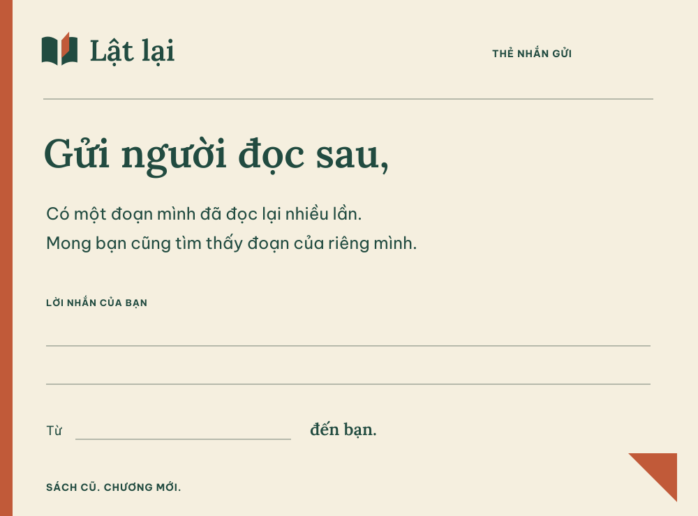
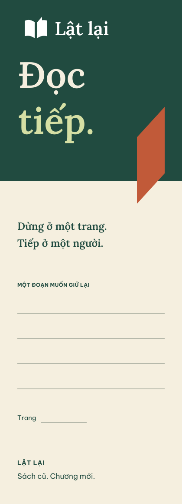

Cũ, có điều để kể.
Một góc bìa sờn, một trang có ghi chú. Những dấu vết cần được mô tả rõ, để người mua biết mình sẽ nhận được cuốn sách như thế nào.

Mua bán & trao đổi sách cũ
Cuốn sách bạn khép lại có thể mở ra điều gì đó cho một người khác.
BÁN LẠI / ĐỔI SÁCH / ĐỌC TIẾP
01 / Điều muốn kể
Lật lại bắt đầu ở khoảnh khắc một người đọc xong và một người khác muốn đọc. Cuốn sách vẫn là cuốn sách ấy. Điều thay đổi là người cầm nó trên tay.
Một góc bìa sờn, một trang có ghi chú. Những dấu vết cần được mô tả rõ, để người mua biết mình sẽ nhận được cuốn sách như thế nào.
Bán lại hoặc đổi một cuốn sách là tạo chỗ cho lần đọc kế tiếp. Nhận diện lấy chuyển động ấy làm điểm nhớ.
Hình ảnh gợi mở niềm vui đọc sách. Giao diện giúp chọn sách bằng thông tin rõ ràng: ấn bản, tình trạng, giá và người bán.
Từ tay bạn → tay bạn đọc.
02 / Dấu hiệu riêng
Giữ logo gốc và tên có dấu. Phát triển trang cam thành ngôn ngữ đồ họa để Lật lại có thể hiện diện cả khi logo không đứng giữa bố cục.

Logo ngang từ 160 px; biểu tượng màu từ 24 px. Chừa khoảng trống tối thiểu bằng ¼ chiều cao hình biểu tượng. Không gõ lại wordmark bằng font hệ thống.
Mảng nghiêng trích từ logo. Một điểm nhấn cho bìa, đầu chương hoặc lời nhắn; giữ nét phẳng và cạnh rõ.
Các dải đứng có độ rộng khác nhau, chung đường chân. Dùng ở vật phẩm và truyền thông để gợi một kệ sách nhiều người góp vào.
Một lề cam, một lời nhắn, khoảng trống để viết tiếp. Chất gần gũi đến từ nội dung cụ thể, không cần làm cũ hình ảnh.
03 / Màu sắc
Năm màu gốc tiếp tục là nền nhận diện. Xanh và kem tạo mảng lớn; cam tạo điểm dừng; màu bìa sách thật được giữ nguyên khi đi vào sản phẩm.
#214B40#F5EFDF#C15A39#202C27#D5DFA4Cam gốc trên kem đạt 3,82:1: dành cho đồ họa. Chữ nhỏ dùng cam đậm #963F28 đạt 6,02:1. Lỗi, cảnh báo và thành công có màu ngữ nghĩa riêng, luôn đi cùng chữ.
Đã tính 13 cặp chữ hoặc viền điều khiển. Đây là kiểm tra bảng màu, chưa phải kiểm định khả năng tiếp cận toàn bộ app. Xem số đo · Tiêu chí tương phản W3C.
04 / Con chữ
Lora tạo nhịp đọc ở tiêu đề. Be Vietnam Pro giữ thông tin giao dịch gọn, rõ và quen thuộc. Cả hai dùng tệp font đi kèm dự án.
Lora / Semibold 600
Sách có dấu.
Chữ cũng vậy.
Ắ ằ Ặ ấ ễ ộ ớ ự
Nguyễn Nhật Ánh
Be Vietnam Pro / 400 + 700
Mô tả đúng điều người mua cần biết. Ưu tiên câu ngắn và thông tin có thể đối chiếu với ảnh.
125.000 ₫
Mẫu chữ và dữ liệu minh họa, không phải listing đang bán.
Tệp Lora hiện có không chứa ký hiệu ₫. Giá tiền, số liệu và nút thao tác dùng Be Vietnam Pro. Khi tích hợp native cần đăng ký đúng font/weight và kiểm tra dấu ở cỡ chữ lớn.
05 / Ra khỏi màn hình
Nhận diện có thể đi cùng cuốn sách: một tấm thẻ kẹp giữa trang, một dấu trang người đọc giữ lại. Đây là mẫu vật phẩm thương hiệu, chưa phải tính năng của app.


Khi kể chuyện
“Cuốn sách bạn khép lại có thể mở ra điều gì đó cho một người khác.”
Ấm, có hình ảnh, dành cho truyền thông và thời điểm giới thiệu.
Khi giúp người dùng thao tác
“Chụp rõ bìa, gáy sách và những trang có ghi chú.”
Cụ thể, hữu ích. Giá, phí, tình trạng và lỗi được nói thẳng.
06 / Bàn giao bước 01
Hướng “Dấu chuyền tay” đã được thể hiện bằng tài sản vector, mẫu typography và bảng màu đo được. Bước tiếp theo là kiểm chứng trên ba màn hình React Native: khám phá, chi tiết sách và đăng sách.